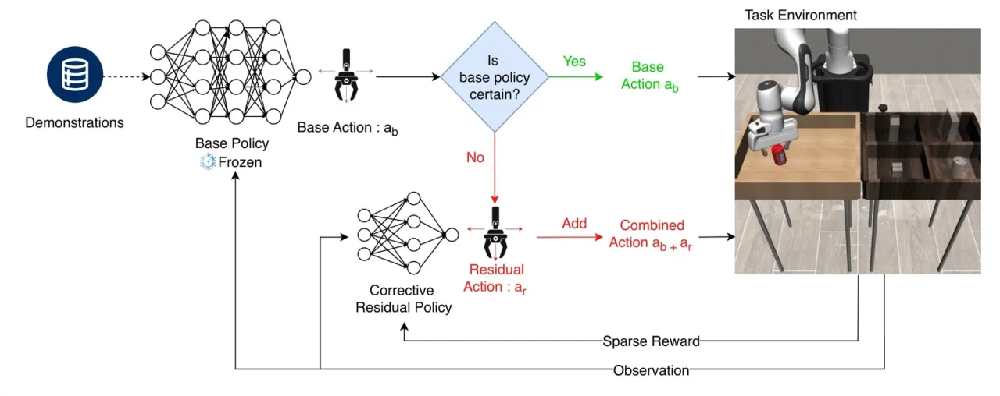
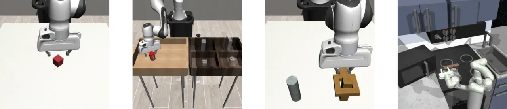
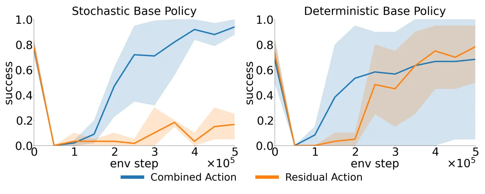
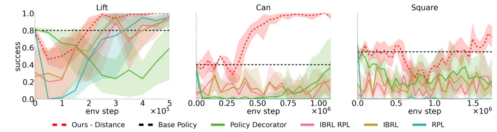
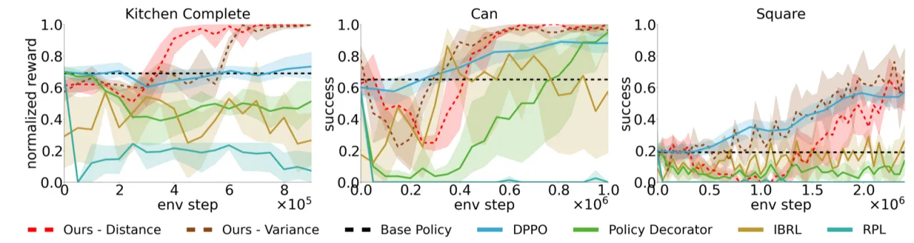
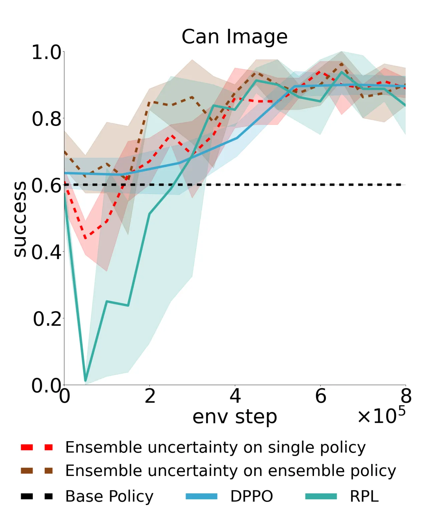
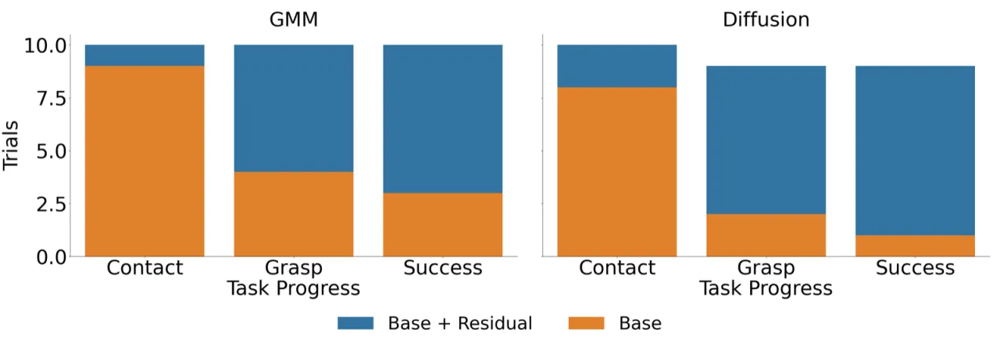
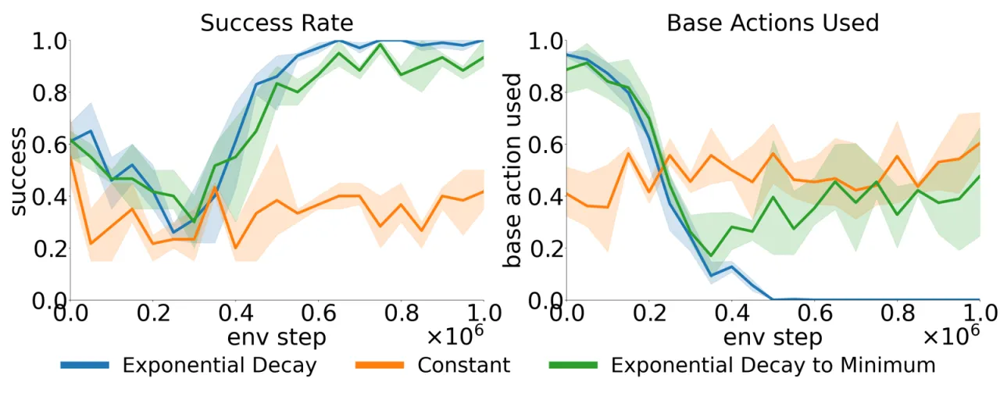
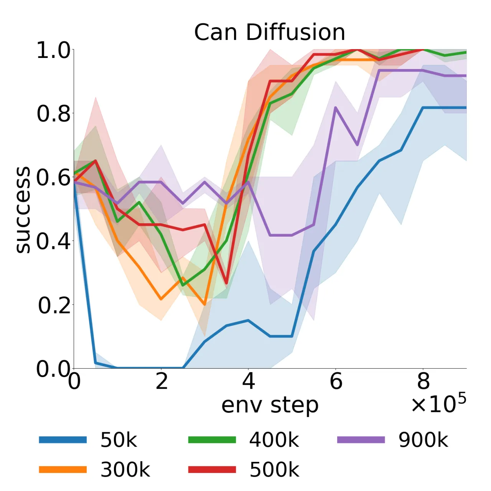
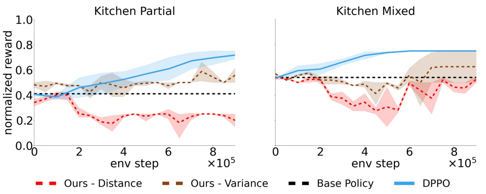

残差强化学习（Residual RL）通过在预训练策略之上叠加一个轻量级"残差策略"来修正动作，相比全量微调具有更高的样本效率。然而现有方法在稀疏奖励下表现欠佳，且只适用于确定性基础策略。本文提出两项改进：①利用基础策略的不确定性估计引导残差策略专注于探索低置信区域；②通过非对称 actor-critic 架构支持 GMM 及 Diffusion 等随机基础策略的 off-policy 学习。
Residual RL 是将预训练策略与强化学习结合的流行范式——只训练一个输出"修正量"的小策略，而不是重新训练整个网络。但两个关键瓶颈制约了其实用性：
残差策略在整个状态空间均匀随机探索，而在基础策略已经表现良好的区域浪费大量样本。在稀疏奖励环境下，这一问题尤为突出。
现有 off-policy Residual RL 方法（如 TD3+BC、SAC）假设基础策略是确定性的。对于 GMM 或 Diffusion Policy 等随机基础策略，动作空间的随机性使 Q 函数训练失效。
"Residual RL is a popular approach for adapting pretrained policies by learning a lightweight residual policy that provides corrective actions. While Residual RL is more sample-efficient than finetuning the entire base policy, existing methods struggle with sparse rewards and are designed for deterministic base policies."


本文的核心思路是让残差策略"知道什么时候该出手"：只在基础策略不确定的状态下叠加修正量，其余情况直接沿用基础策略的输出。同时，通过改造 critic 的输入，使整个框架可以处理随机（非确定性）基础策略。
在每个时间步，先用不确定性估计量 uncertainty(s) 与阈值 τ 比较。若不确定性低（基础策略置信）则直接执行基础策略动作；否则叠加残差修正量：
阈值 τ 随训练步数指数衰减，使策略逐渐从"基础策略主导"过渡到"残差策略主导"：
论文比较了两种不确定性度量：
对于 GMM 或 Diffusion Policy 等随机基础策略，每次采样的动作 a_b 不同。若 critic 仅观测残差动作 a_r，则 Q 函数估计偏差严重。本文的解决方案是让 critic 观测完整组合动作（a_b + a_r），而 actor 只预测残差修正量 a_r，形成非对称结构：
这样可以保证 Q 函数接收到随机基础动作的信息，同时保持"动作分离不变性"（action-split invariance），确保优化目标合理。

在 Robosuite（Lift、Can、Square）、D4RL Franka Kitchen（Complete、Mixed、Partial）、图像输入 Can 任务以及真实机器人 Can 任务上评估。所有结果均带 95% 置信区间。 基线方法包括：DPPO（Diffusion Policy Policy Optimization）、IBRL（Imitation Bootstrapped RL）、IBRL-RPL、Policy Decorator（均匀探索调度）以及标准 Residual RL。







| 任务 / 场景 | 主要基线方法 | 本文方法表现 | 备注 |
|---|---|---|---|
| Robosuite Lift / Can / Square（GMM） | IBRL, Policy Decorator | 超越全部基线 | 样本效率与最终成功率均更优 |
| Kitchen Complete（Diffusion） | DPPO, Policy Decorator | 更高成功率 | 支持随机策略的关键场景 |
| Can 任务（Diffusion） | DPPO, Policy Decorator | 更高成功率 | — |
| Square 任务（Diffusion） | Policy Decorator, DPPO | 性能持平 | 最难任务，无显著差距 |
| Kitchen Partial / Mixed | 标准 Residual RL | ensemble 有提升；distance 失效 | 含随机游走数据时 distance 不可靠 |
| 真实机器人 Can（Zero-Shot） | 仿真策略基准 | 保留近乎全部仿真性能 | 无真实环境额外训练 |
本文的核心假设是"基础策略置信的地方，它的动作也是正确的"。但当训练数据中包含随机游走（random play）数据时，该假设失效——基础策略可能在许多状态下都显示出"低不确定性"但实际上动作质量差。 作者明确指出："it would also benefit from a more robust epistemic uncertainty metric." 这导致 distance-to-data 在 Kitchen Mixed 和 Kitchen Partial 等任务上失效，ensemble 方法虽然改善了情况，但并非完美解决方案。
在图像输入场景中，distance-to-data 度量在高维像素空间中变得不可靠。论文图像实验中已观测到这一问题，并改用 ensemble variance 方法。 对于更复杂的视觉观测场景（如多物体、复杂背景），不确定性估计的鲁棒性需要进一步研究。
作者指出："We believe that, with reliable uncertainty metrics, our approach could also be applied to larger models including robot foundation models." 然而目前实验仅限于 GMM 和 Diffusion Policy 等相对小型的基础策略，尚未在大型视觉-语言-动作模型（如 RT-2、OpenVLA 等）上验证。
尽管实验表明衰减速率在 300k–500k 步范围内较为稳健，但极低的衰减速率会导致过激探索，而极高的衰减速率则会拖慢收敛。在不同任务难度和数据集规模下，最优超参数仍需一定程度的人工调整。